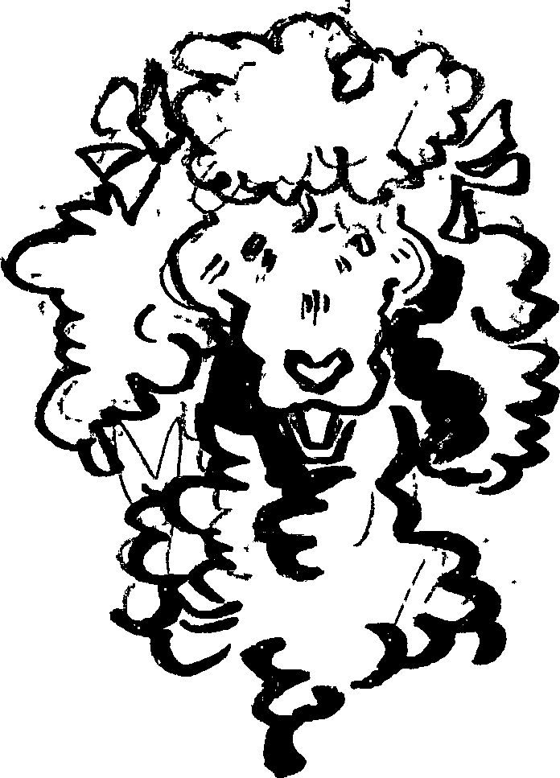
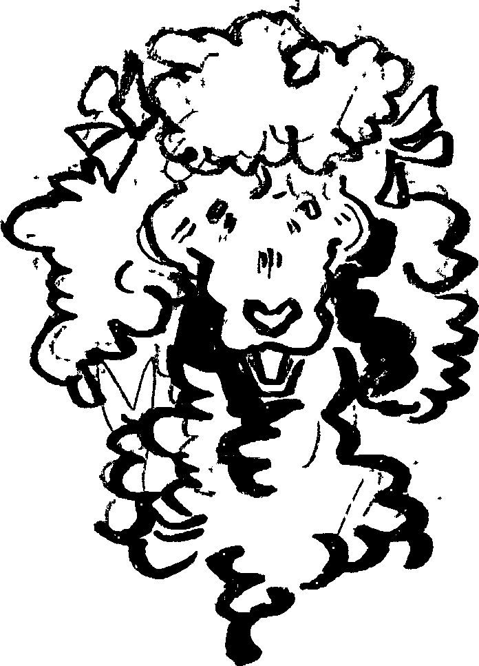

Fluffypants
““Hi” “Tumbleweed! I’m so glad you came on over to see me! “You seem familiar with me, yet I’m not the same with you.” “I’m Fluffypants! I know you cause everyone has heard of the famous Tumbleweed looking for his lost pal!” “I’m sure you just made that up.” “Maybe, but that’s not important. I’ve got a way of solving this.” “About Biscuit?” “Sorta, take a seat for a moment. I’ve got something for you.” I object, there’s nothing of importance here, yet her glare. Judgemental? Concerned? Everything about her tone and her looks, it keeps me from moving. I take a seat down on a splinter filled stool.


 
